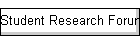

|





Sponsored By:


Technical Co-Sponsors:


|
Steering Committee
Vijaykrishnan
Narayanan, Pennsylvanian State University, USA,
Vice-Chair
Jürgen
Becker, Karlsruhe Institute of Technology, Germany
Lionel
Torres, University of Montpellier, France
Michael Hübner, Karlsruhe Institute of Technology, Germany
Nikolaos Voros, Tech.
Educational Institute of Messolonghi, Greece
Ricardo Reis, Universidade Federal do Rio Grande do Sul,
Brazil
Sandip
Kundu, University of Massachusetts, Amherst, USA
Sanjukta Bhanja,
University of South Florida, USA
Saraju
P. Mohanty, University of North Texas, USA
Susmita Sur-Kolay,
Indian Statistical Institute, Kolkata, India
Organizing Committee
----------------------------------
General Chairs
Hai (Helen) Li,
University of Pittsburgh, USA
Xin Li,
Carnegie Mellon Univeristy, USA
TPC Chairs
Saraju Mohanty,
University of Noth Texas, USA
Michael Hübner,
Ruhr University Bochum, Germany
Jason Xue,
City University of Hong Kong, China
Publication
Chairs
Baris Taskin,
Drexel University, USA
Prasun Ghosal,
Indian Institute of Engineering
Science and
Technology, Shibpur, India
Financial Chair
Wujie Wen,
Florida International University, USA
Special Session
Chairs
Yiran Chen,
University of Pittsburgh, USA
Terry Ye,
Sun
Yat-sen University, China
Web Chair
Theocharis
Theocharides, University of Cyprus, Cyprus
|
Student Research
Forum Chairs
Mehdi B. Tahoori,
Karlsruhe
Institute of Technology, Germany
Shiyan Hu,
Michigan Technological University, USA
Tsung-Yi Ho,
National Tsing Hua University,
Taiwan
Publicity Chairs
Miroslav Velev,
Aries Design Automation, USA
Guangyu Sun,
Peking University, China
Aida
Todri-Sanial, CNRS-LIRMM, France
Jintong Hu,
Oklahoma State University, USA
Local Arrangement
Chairs
Zhaojun Liu,
Sun Yat-sen University, China
Registration
Chair
Natasa
Miskov-Zivanov, Carnegie Mellon
University, USA
Auto-Visual Chair
Dhireesha
Kudithipudi, Rochester Institute of Technology, USA
Liaison Chairs
Ricardo Reis,
Federal University of Rio Grande do Sul (UFRGS), Brazil
Wei Zhang,
Hong Kong University of Science and Technology, China
Jürgen Becker,
Karlsruhe Institute of Technology, Germany
|
Technical Program
Committee
----------------------------------
|
ISVLSI 2016 - TRACK CHAIRS |
|
NAME |
Affiliation |
Track |
|
Jia Di |
University of Arkansas |
Digital Circuits and FPGA based Designs |
|
Ann Gordon-Ross |
University of Florida |
|
Massimo Poncino |
Polytechnic University of Turin |
Computer-Aided Design and Verification |
|
Laleh Behjat |
University of Calgary |
|
Garrett Rose |
University of Tennessee |
Emerging and Post-CMOS Technologies |
|
Aida Todri-Sanial |
LIRMM |
|
Ricardo Chaves |
IST, TULisbon / INESC-ID |
System Design and Security |
|
Patrick Schaumont |
virginia tech |
|
Alberto Bosio |
LIRMM |
Testing, Reliability, and Fault-Tolerance |
|
Djones Lettnin |
UFC |
|
Ashok Srivastava |
Louisiana State University |
Analog and Mixed-Signal Circuits |
|
Nils Pohl |
Univ. of Bochum |
|
Mehdi Tahoori |
Karlsruhe Institute of Technology |
Student Research Forum |
|
Shiyan Hu |
Michigan Technological University |
|
Tsung-Yi Ho |
National Tsing Hua University, Taiwan |
|
Technical Program Committee Members |
| |
|
|
|
Digital Circuits and
FPGA based Design Track |
|
Bharat |
Joshi |
IMS Laboratory |
|
Christophe |
Jego |
University of Arkansas |
|
Christophe |
Bobda |
Université catholique de Louvain |
|
David |
Bol |
NTUA |
|
Dimitrios |
Soudris |
Indian Institute of Technology (IIT)
Indore |
|
Anirban |
Sengupta |
Eindhoven University of Technology |
|
Hailong |
Jiao |
Univ of South Florida |
|
Hao |
Zheng |
Southern Illinois University
Carbondale |
|
Ning |
Weng |
Univ. Central Florida |
|
Ron |
Demara |
National Taiwan University of Science
and Technology |
|
Shanq-Jang |
Ruan |
Broadcom Corporation |
|
Srinidhi |
Kestur |
City University of New York, City
College |
|
Bo |
Yuan |
|
| |
|
|
|
Computer-Aided
Design and Verification Track |
|
Kunal |
Ganeshpure |
Mentor Graphics Corporation |
|
Nagi |
Naganathan |
Avago Technologies |
|
Shih-Hsu |
Huang |
Chung Yuan Christian University |
|
Theocharis |
Theocharides |
University of Cyprus |
|
Laleh |
Behjat |
University of Calgary |
|
Fa |
Wang |
Oracle |
|
Miroslav |
Velev |
Aries Design Automation |
|
Zainalabedin |
Navabi |
WPI |
|
Yiyu |
Shi |
Notre Dame University |
|
Sanghamitra |
Roy |
Utah State University |
| |
|
|
|
Emerging and Post-CMOS
Technologies Track |
|
Arthur |
Nieuwoudt |
Synopsys |
|
Dhireesha |
Kudithipudi |
Rochester Institute of Technology |
|
Himanshu |
Thapliyal |
University of Kentucky |
|
Jiang |
Xu |
Hong Kong University of Science and
Technology |
|
Lionel |
Torres |
LIRMM |
|
Marc |
Belleville |
CEA-Leti |
|
Nezih |
Pala |
Florida International University |
|
Pierre-Emmanuel |
Gaillardon |
LSI - EPFL |
|
Prasun |
Ghosal |
Indian Institute of Engineering
Science and Technology, Shibpur |
|
Rashmi |
Jha |
|
|
Thomas |
Mikolajick |
NaMLab / TU Dresden |
|
Jeyavijayan |
Rajendran |
University of Texas at Dallas |
|
Wujie |
Wen |
University of Pittsburgh |
| |
|
|
|
System Design and
Security Track |
|
Apostolos |
Fournaris |
Technological Educational Institute of
Western Greece |
|
Chengmo |
Yang |
University of Delaware |
|
David |
Hely |
Grenoble INP |
|
Fernando |
Moraes |
PUCRS |
|
Guy |
Gogniat |
Université de Bretagne Sud - UEB |
|
Jude |
Ambrose |
University of New South Wales |
|
Luciano |
Ost |
University of Leicester |
|
Madhu |
Mutyam |
Indian Institute of Technology,
Madras. |
|
Mateus |
Rutzig |
Federal University of Santa Maria |
|
Mehran |
Kermani |
Rochester Institute of Technology |
|
Michail |
Maniatakos |
New York University Abu Dhabi |
|
Naghmeh |
Karimi |
Rutgers University |
|
Nele |
Mentens |
KU Leuven |
|
Ramesh |
Karri |
Polytechnic Institute of NYU |
|
Rance |
Rodrigues |
University of Massachusetts at Amherst |
|
Tanguy |
Risset |
Citi, INSA-Lyon |
|
Yier |
Jin |
The University of Central Florida |
|
Nicolas |
Sklavos |
University of Patras |
|
Arun |
Kanuparthi |
Intel Corporation |
| |
|
|
|
Testing, Reliability
and Fault-Tolerance Track |
|
Dong |
Xiang |
Tsinghua University |
|
Fang |
Bao |
University of Connecticut |
|
Irith |
Pomeranz |
Purdue University |
|
Leticia |
Bolzani Poehls |
Catholic University of Rio Grande do
Sul (PUCRS) |
|
Matteo |
Sonza Reorda |
Politecnico di Torino |
|
Michele |
Portolan |
TIMA |
|
Mihalis |
Psarakis |
University of Piraeus |
|
Paolo |
Bernardi |
politecnico di torino |
|
Xiaoqing |
Wen |
Kyushu Institute of Technology |
|
Zebo |
Peng |
Linkping University |
|
Florence |
Azais |
LIRMM |
|
Elena Ioana |
Vatajelu |
Politecnico di Torino |
|
Manuel |
Barragan |
TIMA Laboratory |
| |
|
|
|
Analog and
Mixed-Signal Circuits Track |
|
Amir |
Zjajo |
Delft University of Technology |
|
Changzhi |
Li |
Texas Tech University |
|
Dhruva |
Ghai |
Oriental University |
|
Geng |
Zheng |
Analog Devices, Inc. |
|
Gildas |
Leger |
Instituto de Microelectronica de
Sevilla (IMSE-CNM-CSIC) |
|
Jose |
Gyvez |
|
|
José |
Silva |
FEUP |
|
Manish |
Goswami |
IIT |
|
Manisha |
Pattanaik |
ABV-IIITM GWALIOR |
|
Maryam |
Baghini |
IIT-Bombay |
|
Steffen |
Paul |
University Bremen |
|
Vincent |
Kerzerho |
LIRMM-CNRS |
|
Elias |
Kougianos |
University of North Texas |
| |
|
|
|
Student Research
Forum Track |
|
Alberto |
Garcia-Ortiz |
U. Bremen / TEM.IDS |
|
Arnaud |
Grasset |
Thales Research & Technology |
|
Fabio |
Campi |
Simon Fraser University |
|
Marco |
Wehrmeister |
Federal University of Technology -
Parana |


This site is maintained by:
ISVLSI 2016 Web ChairTheo Theocharides (ttheocharides@ucy.ac.cy),
University of Cyprus.
|